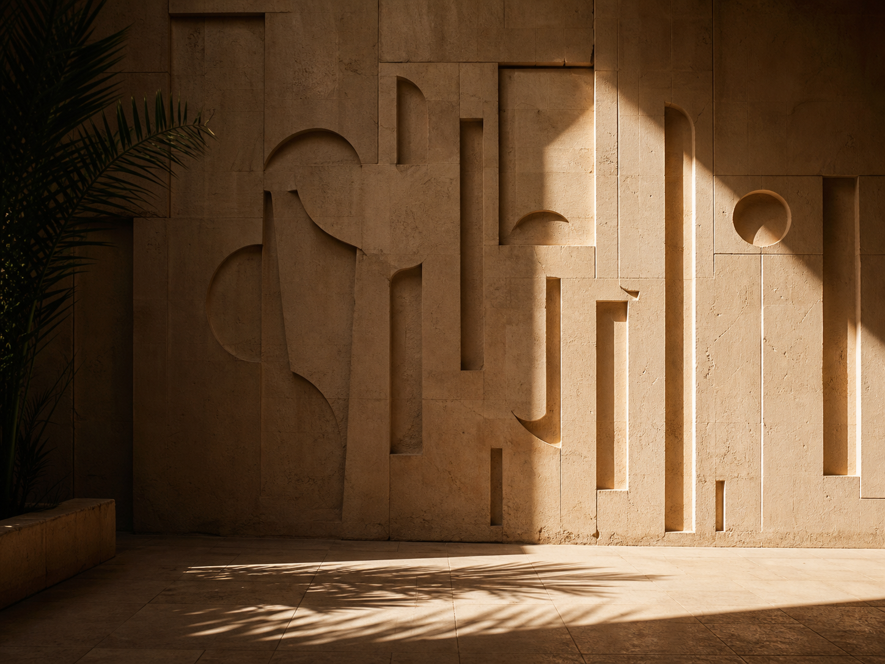
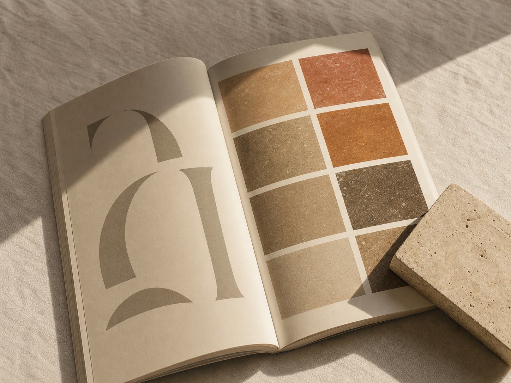
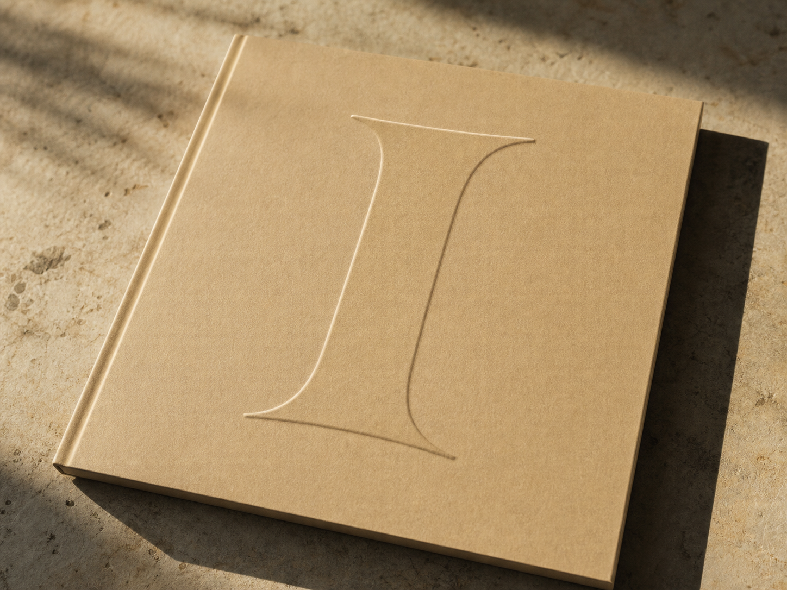
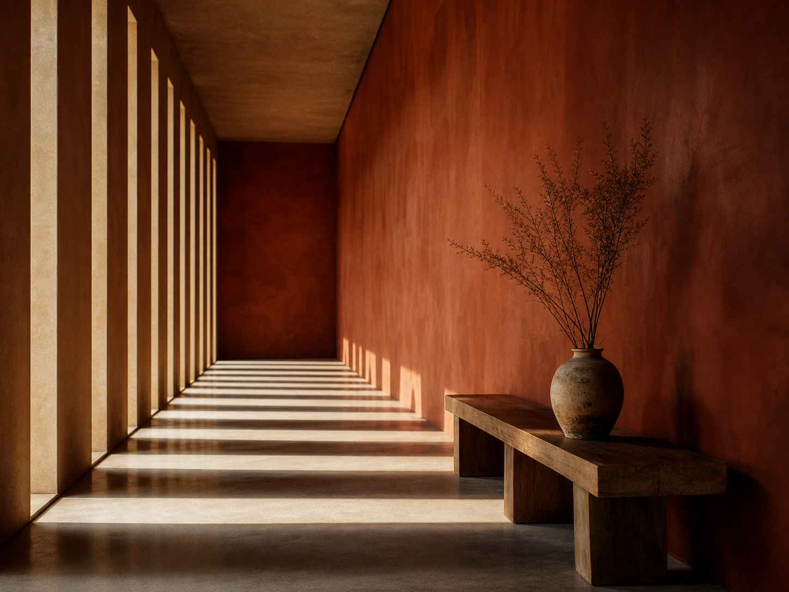
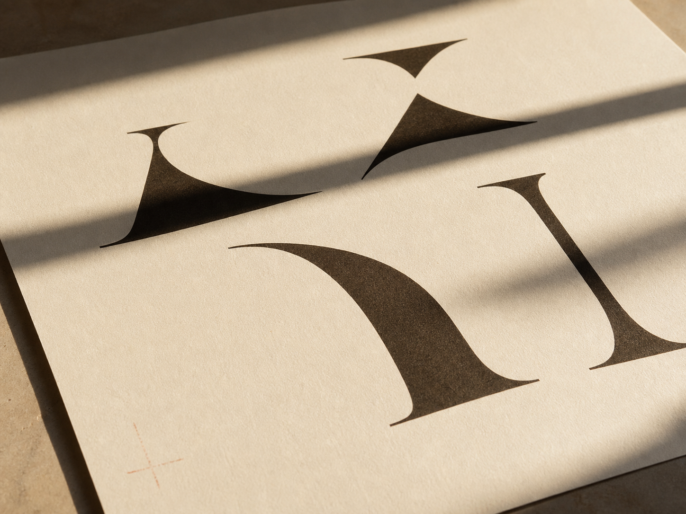
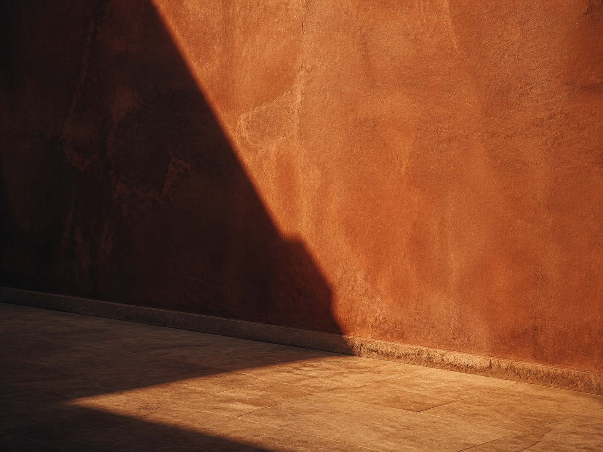

Built to be read in sunlight.
Riwaq, editorial studio, MarrakechA studio for editorial brands that prefer weather, stone and patience over noise, gradients and motion for its own sake.
We publish one long-form architectural essay per solstice, printed in pigment ground from the very stone it documents.
Riwaq is a small editorial practice working out of a single sunlit room on the Rue Riad Zitoun el Jdid. We make books, identities, and field guides for clients who would rather build a sundial than a slide deck: museums, ateliers, vineyards, and architects of the slow kind.
Four issues a year, six commissions, no more. Everything is measured in the warm hour before the plaster goes cold.
Issues to date
Every issue, in raking light.
Each issue is printed in pigment ground from the stone it documents. The table is the record: subject, pigment, extent, and the season it was filed.
| Issue | Subject | Pigment | Pages | Filed |
|---|---|---|---|---|
| i | A field guide to quiet ground | Ground ochre | 132 | mmxxiv |
| ii | The long room at Casa Namma | Burnt sienna | 96 | mmxxiv |
| iii | Marvell stone, second printing | Terracotta wash | 168 | mmxxv |
| iv | An almanac for slow buildings | Raw umber | 132 | mmxxv |
| v | Solar calendar | Pale ochre | 64 | mmxxv |
| vi | Silent House letterforms | Matte umber | 48 | mmxxvi |
| vii | The dusk wall, printed | Dusk orange | 32 | mmxxvi |
| viii | The hour the wall goes cold | Cold umber | 40 | mmxxvi |
Selected work
Six from the index.
Read as a single carved wall under one light. Follow the index for the full record.





We work between two solstices. Everything else is the long hour between, when the wall is still warm, the room is quiet, and the type is finally legible at every angle of the day.